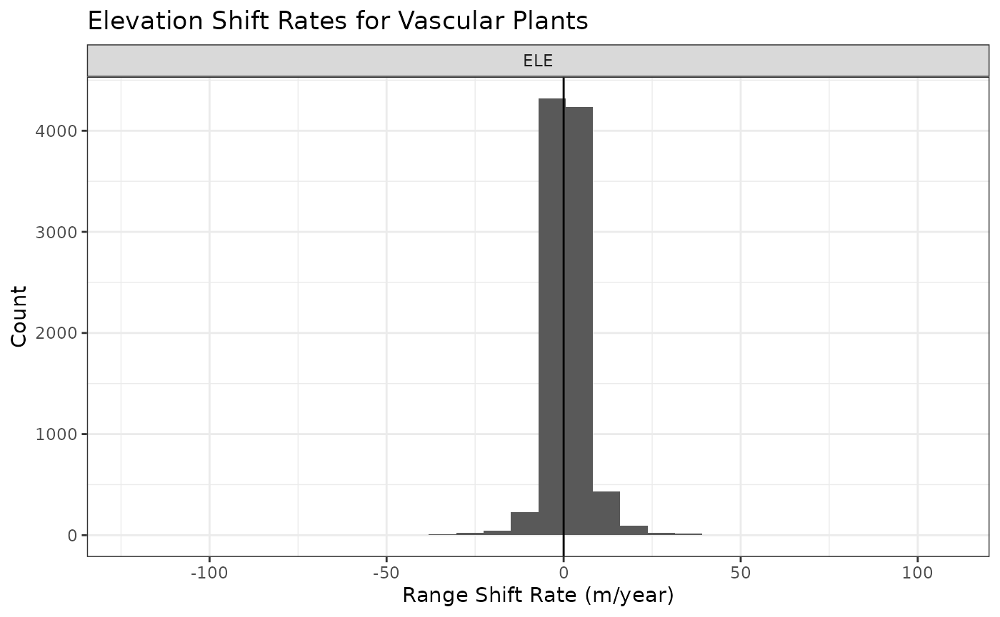
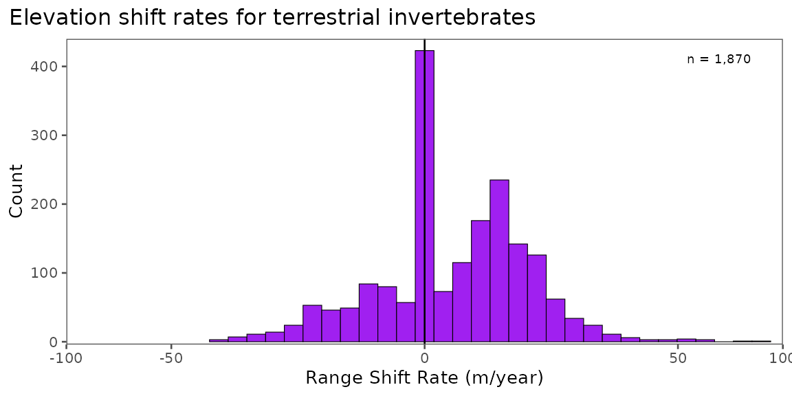

Curating Data for Hypothesis Testing
curating_for_hypothesis_testing.RmdCurating Data for Research and Hypothesis Testing
Here, we demonstrate how BioShifts and the BioShiftR package can be used to access, subset, and organize bioshifts data for research, hypothesis testing, and connecting to external data sources.
Example Scenario: do plants on faster-warming mountains shift at faster rates?
Perhaps we want to test whether faster-warming regions have faster range shifts across latitudes and elevations. Using BioShiftR, we can easily access and organize data to test targeted hypotheses.
Built-in filter steps
Many of BioShiftR’s functions provide simple methods for targeting,
filtering, and subsetting range shift data. The
get_shifts() function, for example, has arguments for
continent, type (of range shift), and group (broad taxonomic and
functional classifications); see the get_shifts() function
page for details on options.
Other functions which merge values from other dataframes to the range
shifts database also have filtering options, usually for selecting
study-level or species-specific values. For example, the
add_cv(), add_baselines(), and
add_poly_info() functions all contain options to either add
these values from species-level or study-level polygons.
Get the data
In this case, we can use get_shifts() to easily query
the ~32,000 range shifts in the BioShifts database to our target group,
target range shift type, and target continent. Here, we will query
latitudinal and elevational range shifts for plants.
library(BioShiftR)
library(dplyr)
# get shifts
df <- get_shifts(type = "ELE",
group = "Vascular Plants")
# plot a histogram
df %>% ggplot(aes(x = calc_rate)) +
geom_histogram() +
facet_wrap(~type, nrow = 2,
scales= "free_x") +
geom_vline(xintercept = 0) +
labs(x = "Range Shift Rate (m/year)",
y = "Count",
title = "Elevation Shift Rates for Vascular Plants")
Filter by methods
Here, we are testing the effect of the warming trend within a study’s
duration on the range shift rates observed in species in that region.
Because warming trend and range shift rates are both detected over time,
usually with high amounts of interannual variation, we might assume that
longer durations will produce more reliable signal-to-noise of both
warming trend and range shift rate. We will use this assumption as an
example to demonstrate here how we can add and filter by methods using
BioShiftR.
# add methodological variables to the shifts database
df2 <- df %>%
add_methods()
# filter to durations over 20 years
df2 <- df2 %>%
filter(duration >= 20)Add exposure variables
Here, we will assess shift rates by climate exposure – or the rate of
warming in the study area and period over which teh shift was observed.
BioShiftR includes three functions for adding climate
exposure variables: add_baselines() to add the mean
temperature of the regions, add_trends() to get the warming
trend of the study, and add_cv() to add the velocity of
isotherm shifts across the latitudinal or elevational gradients over
which shifts are observed. Here, we will use add_trends()
to get the rate of warming within studies.
df3 <- df2 %>%
# add warming trends: here, we use type = "SP" for species-specific rates
add_trends(type = "SP")
#> Warning: Not all shifts have associated species-specific polygon values, or
#> values at every resolution. 1526 NAs returned.
df3 <- df3[!is.na(df3$trend_temp_mean),]Plot the Trend
Here, we will use ggplot’s default model (geom_smooth())
to do a “quick and dirty” assessment of our hypothesis.
# plot all data and basic model fit
df3 %>%
ggplot(aes(x = trend_temp_mean,
y = calc_rate)) +
geom_hline(yintercept = 0) +
geom_vline(xintercept = 0) +
geom_point(alpha = .2) +
geom_smooth(method = "lm") +
labs(x = "Warming Rate (°C/year)",
y = "Shift Rate (m/year)",
title = "Exposure and Elevation Shifts")
Addressing Non-Independence of Data
Range shift estimates in BioShifts are collected from many unique studies that use different methods, are in different locations, and have different numbers of species within them. This means that data individual shifts are not statistically independent. To address this, we might use something like a mixed model with a random effect for the article or polygon in which shifts were identified. Here, we will simplify to study-level means.
df3 %>%
# group by article ID and polygon ID (polygons are within articles)
group_by(article_id, poly_id) %>%
# find mean rates
summarize(calc_rate = mean(calc_rate, na.rm= T),
trend_temp_mean = mean(trend_temp_mean, na.rm=T),,
n = n()) %>%
ggplot(aes(x = trend_temp_mean,
y = calc_rate)) +
geom_hline(yintercept = 0) +
geom_vline(xintercept = 0) +
geom_point(aes(size = n)) +
# weight the model by number of shifts observed within a study.
geom_smooth(method = "lm",
aes(weight = n)) +
labs(x = "Warming Rate (°C/year)",
y = "Shift Rate (m/year)",
title = "Exposure and Elevation Shifts -- Study Means",
size = "n in article")